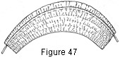
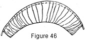
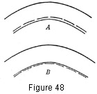
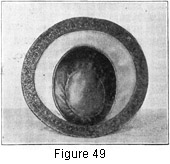

1930—Millinery Processes
by Carlotta M. Brown
FACINGS
As the facing of the brim is the part of the hat which comes directly in contact with the hair and skin, particular attention must be given to the texture and color of the material and to the type of facing used. With soft, plain, and sectional facings to choose from it will not be difficult to make a selection well suited both to the brim and to the individual. Color may be added to a somber hat and tone to a colorless skin by means of the correct facing; a hat otherwise unattractive may be redeemed by this note.
Soft Facings
The simplest type of soft facing is made either from a bias or a straight strip of material; a number of shirr threads may be added before the facing is attached to the brim if a more elaborate facing is desired.
Without shirrings. Cut a strip of material which measures the depth of the widest part of the brim, plus a half-inch seam allowance on each side. In length make the strip one and a fourth times the circumference of the outer edge of the brim. Join in a circle, mark the front, and press the seams. Turn a casing along one edge so that a wire may be inserted as for shirred binding (Fig. 18). Pull up the casing thread, adjusting the gathers over the wire. Place the wire flush with the edge of the brim, pin, and sew into place as in making a cord-edge finish (Fig. 38). Do not run a gathering thread at the head size, but pull the fullness snugly into place and fasten with a long-and-short stitch.
With shirrings. Follow the same process of construction as for plain soft facing except that shirr threads are run around the strip from ½ to 1 inch apart. These are drawn up and fastened after the edge is finished (Fig. 47).
Figure 46. Plain soft facing.
Figure 47. Soft facing with shirrings.
Plain Facings
If the brim is very narrow a bias strip may be used for a plain facing; if it is wide a plain fitted facing must be cut.
Bias strip for facing. Directions for this are given under Brim Coverings. (See In two strips and for fitted facing see pages 16-17, 104.)
Sectional Facings
Color may be introduced in the right proportion by the use of the sectional facing. When two colors are to be combined, keep in mind that uneven spacing of the colors is much more interesting than equal spacing. The outer section may be finished over the section placed next to the head size, or the finishing may be reversed.
Figure 48. Fittched sectional facings. A, outer section of fitted sectional facing with final finish over head-size section using cord-edge finish; B, head-size section of fitted sectional facing with final finish over outer section.
Head-size section fitted first. If the outer section is to have the final finish (Fig. 48, A), cut and fit the section next to the head size first as for a fitted facing. This should extend over only a portion of the brim. The raw edge is sewed to the brim with the long-and-short stitch, the long stitch over the edge of the section. A bias flange or a fitted flange may be used on the edge, according to the width of the outer section.
Edge section fitted first. If the head-size section is to have the final finish (Fig. 48, B), cut, fit, and adjust the outer section, as for the bias flange or the fitted flange, according to its width, but do not make the turning at the inner edge, since this is concealed when the final finish is made. Cut and fit the head-size section and make a cord-edge finish at the outer edge (Fig. 38). Sew the head size into place with the long-and-short stitch.
The same effect may be carried out with straw-braid and fabric combinations, several rows of the straw braid being sewed at the edge instead of the fitted outer section. The braid may be used for the final finish (Fig. 49), or the head-size section with its cord edge may be used for a finish.
Figure 49. Combination braid and silk facing. Placing and attaching of lining.